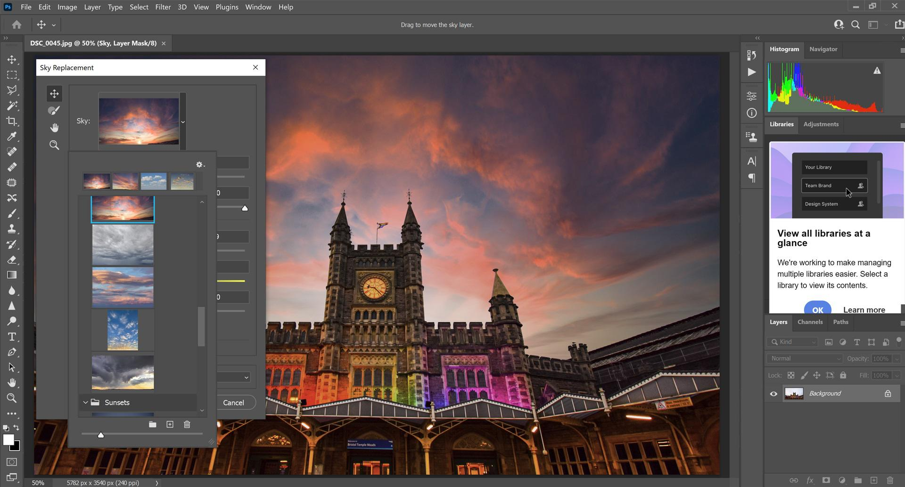
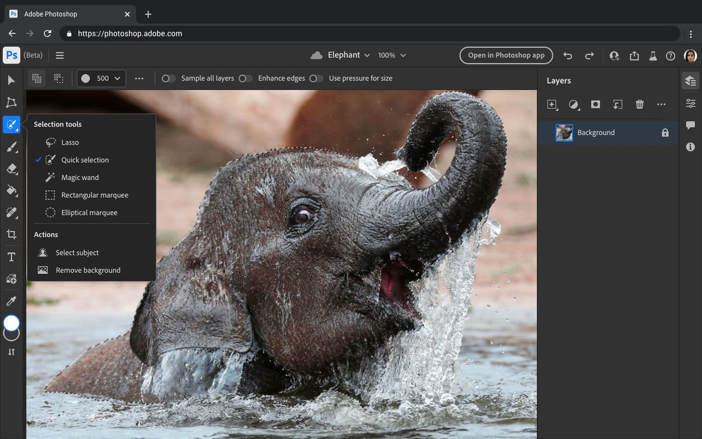
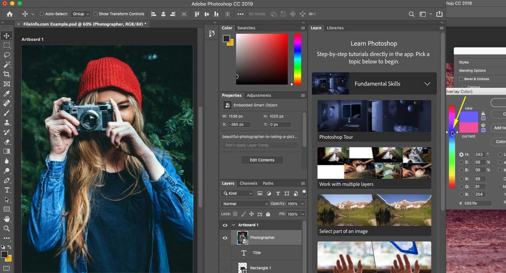

|
ADOBE PHOTOSHOP |
Apresentação
| Adobe Photoshop é um programa profissional
de edição de imagem disponível para download no PC (Windows e macOS), além de ser possível
baixar no celular Android ou iPhone (iOS).
Vale ressaltar que não existe uma versão oficial para web, ou seja, não é possível usar o
Photoshop online. Porém, a Adobe lançou o Photoshop Express, que é uma alternativa ao Photoshop
Online.
O editor é pago, porém pode ser grátis durante 30 dias, para testes de novos usuários. Ele está
disponível em português na maior parte das suas versões.
|
 |
|  |
Como usar o photoshop
O programa traz funções básicas para edição de imagem, além de recursos mais profissionais.
O software permite recortar e redimensionar imagens, aplicar filtros e regular parâmetros de
cores, fazer ajustes de exposição e brilho em fotografias.
Além disso, usuários iniciantes podem usar o Photosop para remover manchas e espinhas da pele,
inserir textos sobre imagens e simular o efeito modo retrato encontrado em aplicativos e recursos
da câmera de celulares. Confira como editar fotos no Photoshop.
|
| Para quem deseja fazer um efeito neon, o Photoshop
pode ser a solução. O efeito neon em textos é em geral muito apreciado por designers, blogueiros
e pessoas que gostam de algo mais moderno. Confira o tutorial de como criar efeito neon em textos
com o Photoshop.
É possível baixar fontes para o Photoshop. O editor de imagens oferece uma lista original de letras
e fontes para os usuários usarem em seus projetos.
No entanto, é possível incrementar as opções já existentes ao adicionar novas fontes, com variados
estilos, cores, texturas e designs. Conheça os melhores sites para baixar fontes para Photoshop.
|
 |
Para saber mais acesse:
https://www.techtudo.com.br/tudo-sobre/adobe-photoshop/